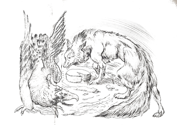
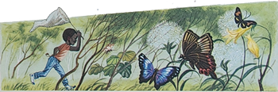
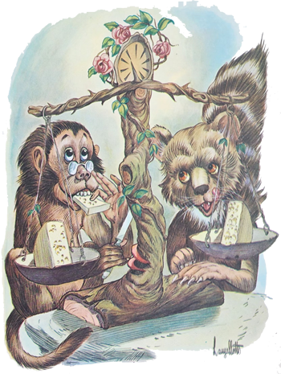
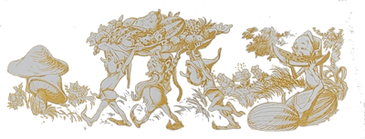

Como haviam resolvido passar o dia no campo, talvez por não sentirem vontade de rever tão cedo o dono do hotel, nossos amigos aprontaram-se para almoçar ao ar livre. Foram a uma vendinha e compraram várias coisas para comer. Depois trataram de encontrar um local aprazível onde pudessem acomodar-se. Encontraram um lugar ideal sob uma árvore muito frondosa e começaram a arrumar no chão o que tinham levado. Por não terem ali uma toalha, estenderam os próprios papéis dos embrulhos. Quem demonstrou maior prática para a preparação da “mesa” foi Jaci. Os outros, vendo que ela dava conta do recado, pouco a pouco se foram afastando e ficaram à espera do sinal de ataque.
De repente Marisa disparou pelo campo atrás de uma borboleta, uma linda e enorme borboleta multicor que esvoaçava sobre coloridas flores silvestres alguns passos mais adiante. Parecia que a borboleta estava-se divertindo com a perseguição que lhe fazia a menina. Pousava numa flor, esperava que Marisa chegasse bem perto, e quando a menina quase ia pegá-la, voava subitamente, indo pousar noutra mais adiante, obrigando-a a dar nova corrida.
Todos ficaram esquecidos observando o que acontecia. Até Jaci, que estava arrumando o almoço com tanta atividade, distraiu-se olhando a caçada que Marisa fazia à esperta borboleta.
A luta continuou sem resultado apesar da torcida que se organizara a favor da menina. Carlinhos não aguentou mais a expectativa e saiu em socorro da amiga. Mas aquela borboleta usava a cabeça. Sabia fugir ao cerco com toda a calma e graciosidade. Em certo momento, Carlinhos quase a pegou, o que fez Marisa dizer-lhe:
- A borboleta é minha, hein? Se você conseguir pegá-la, não pode ficar com ela, ouviu?
- Está bem! – concordou Carlinhos. Para que vou querer uma borboleta? Só estou ajudando!
A corrida prosseguiu sem nenhum sucesso. Em dado momento, a borboleta pousou numa flor e sossegou, parecendo haver chegado a ocasião que as duas crianças esperavam com tanta ansiedade. Ambas correram com todas as suas forças para agarrar a espertalhona: Marisa de um lado e Carlinhos de outro. Aí . . . Aí foi uma cabeçada de fazer barulho. A borboleta saiu voando alegremente e as duas crianças ficaram segurando a cabeça; atordoadas pela violência da batida.
O Arrelia, ao ver o que acontecera, correu para elas acompanhado de Iberê e de Sérgio.
- Vocês estão bem? – perguntou o Arrelia. Puxa, essa foi de rachar! Saiu até faísca!
Felizmente não tinha sido nada de grave e todos seguiram para o lugar do almoço, onde Jaci se encontrava. Como Jaci voltara a concentrar-se em seus afazeres, não vira o que acontecera e assim perguntou:
- Como é, pegaram a borboleta?
O Arrelia, que vinha abraçando os dois caçadores, ficou surpreso:

- Borboleta? Você não viu o que aconteceu?
Jaci disse que não. O Arrelia brincou:
- Eles queriam pegar a borboleta e acabaram caçando dois galos: um galo cada um.
Jaci olhou para as mãos de todos para ver onde é que estavam os galos.
- Na cabeça de Marisa e do Carlinhos! – esclareceu o Arrelia.
A menina ficou olhando sem compreender. Ele contou o sucedido e Jaci umedeceu e pôs um pouco do sal que haviam comprado sobre os galos “caçados” pelas duas crianças.
Depois todos se acomodaram em volta dos papéis que serviam de toalha e começaram a almoçar. Embora houvesse água para beber, pois o dono da venda lhes arranjara um garrafão, surgiu um problema: não tinham copos. Nenhum. O que fazer? O Arrelia levantou-se e disse que sabia onde encontrá-los. Voltou com algumas largas folhas de planta e mostrou às crianças como podiam transformar aquelas folhas em copos. Recebeu uma salva de palmas por ter resolvido o problema.
Meia-hora depois não havia mais nada para comer, porém também não tinha mais ninguém com fome. Para não fugirmos à verdade, sobrara um ovo cozido e ainda restava um lugarzinho no estômago de Carlinhos e de Sérgio. Os dois tentaram pegá-lo ao mesmo tempo mas Sérgio conseguiu segurá-lo. Na ansiedade com que o fez, o ovo caiu-lhe da mão e foi a vez de Carlinhos. Aí começou a disputa: “É meu! É meu!” O Arrelia resolveu o caso partindo o ovo ao meio e dando um pedaço para cada um. Não foi feliz, porém: um pedaço ficou maior do que o outro e o prejudicado, Carlinhos, não queria conformar-se.
- Olhem – disse o Arrelia. É melhor vocês comerem antes que aconteça o que aconteceu com o Gavião e a Raposa, não sabem?
O Gavião, sentindo fome, saiu à procura de alguma coisa em que pudesse por o bico. Não estava num dia de sorte. Já fazia bastante tempo que voava e não encontrara nada. Onde mais ia procurar comida? Quando começou a sentir-se desanimado, avistou lá embaixo, na estrada, um objeto redondo que o fez descer o mais depressa que pode. Era um queijo, um belo queijo. Ele enfiou-lhe as poderosas garras e levantou voo, o que não foi fácil por causa do peso.
Também andava por perto, da mesma forma à procura de comida, a pobre Raposa, que não punha nada no estômago não sabia desde quando. Corria daqui, procurava dali e nada. Ao chegar ao local onde o queijo havia estado, a Raposa sentiu-lhe o cheiro e pôs-se a procurá-lo desesperadamente. Em que lugar estaria ele? Lá no alto, o Gavião subia com esforço, carregando aquela preciosidade. Quando ele menos esperava, o queijo escapou-lhe das garras e veio cair perto da Raposa. Esta ficou de boca aberta. Aquilo havia caído do céu! Que sorte! Até que enfim ia poder matar a fome! Se ela houvesse olhado para cima, teria visto o Gavião descendo que nem uma flecha. Mal a Raposa colocara as patas sobre o queijo, o Gavião pousou perto dela:
- Dê-me o queijo que ele é meu! – gritou raivosamente.
- Seu? Por quê? Acabo de recebê-lo do céu neste instante e não vou entregá-lo a ninguém! Era só o que faltava! – respondeu a Raposa segurando ainda mais o queijo.
O Gavião ficou louco da “viuda”:
- Caiu do céu? Caiu do céu coisa nenhuma! Escapou das minhas garras quando eu estava voando! Portanto dê-me esse queijo que ele me pertence!
A Raposa estava decidida a conservar o achado a qualquer custo:
- Então, era seu! Achei-o e agora ele me pertence.
Saiu uma discussão “daqueulas”. A Raposa não podia tirar as patas do queijo com medo de que o Gavião o agarrasse e este não parecia disposto a sair dali. O que fazer? Depois de haverem ficado muito tempo naquela posição, a Raposa teve uma ideia:
- Assim é que não podemos ficar. Você acha que o queijo é seu e eu acho que ele é meu. Não vamos conseguir nada porque o desejo de possuí-lo nos tira toda a capacidade de raciocinar. Vamos fazer uma coisa?
- Fazer o que? – perguntou o Gavião, desconfiado.
- Procurar o juiz e deixar que ele resolva a questão.
O Gavião pensou, pensou e, não vendo outro jeito, achou melhor concordar, certo de que sairia vencedor. Aí surgiu o problema de quem levaria o queijo. A Raposa propôs:
- O mais certo é eu carregá-lo pois não posso voar. Você pode montar nas minhas costas e me vigiar. Não é lógica a minha proposta?
O Gavião foi obrigado a dizer que sim. A Raposa segurou o queijo entre os dentes, o Gavião subiu-lhe nas costas e os dois tomaram a direção da casa do juiz. Lá chegados, encontraram o juiz, que era o Guaxinim, tratando de um assunto com seu escrivão, que era o Macaco.
- O que é guaxinim? – perguntou Marisa.

O Arrelia tomou um pouco de água em seu copo improvisado e explicou:
- É um animal mamífero parecido com o urso, porém de tamanho bem menor. Contando a cauda, deve medir mais ou menos um metro de comprimento. Tem a cor cinzento-amarelada, salpicada de preto.
Como eu “estauva” dizendo, o juiz e o escrivão encontravam-se tão ocupados que nem notaram a presença dos dois. Ficaram esperando um bom tempo. Por fim o juiz deu com eles e perguntou-lhes:
- O que desejam?
O Gavião respondeu:
- Queremos fazer uma consulta.
O juiz prestou mais atenção, cutucou o Macaco e dirigiu-se aos dois, admirado:
- Mas o que está acontecendo? Seu Gavião a cavalo em Dona Raposa e ela mordendo um queijo! Jamais eu tinha visto tal coisa!
O Gavião pulou das costas da Raposa, esta largou o queijo e esclareceu o sucedido.
- Bem – disse o juiz. Primeiro os senhores têm de pagar uma taxa.
A Raposa ficou sem jeito e disse que no momento não tinha com o que pagar.
O Gavião, por sua vez, confirmou que estava na mesma situação.

- Não tem importância! – exclamou o juiz. Poderão pagar com um pouco desse saboroso queijo. Passou a língua pelos beiços e completou: - Um pedaço para mim, outro para o meu escrivão.
o Macaco virou os olhos, sentindo já o gosto do petisco. Os dois briguentos olharam o queijo com pena e não viram outra solução senão concordar.
- Está certo – disse a Raposa.
- Que remédio! – falou o Gavião.
O juiz mandou o escrivão apanhar uma faca bem amolada e cortou duas belas fatias do precioso queijo. O Gavião e a Raposa ficaram olhando o assalto com uns olhos de quem vai chorar. Num instante as duas fatias desapareceram. Os comilões limparam a boca calmamente.
- Bem – começou o Guaxinim. Já que estamos acertados, podemos começar a tratar do caso. Dona Raposa acha que ele é o dono. Parece ser um caso complicado, mas eu, com minha competência, saberei resolvê-lo facilmente.
Sentou-se, acomodou-se, olhou para o Macaco e ordenou:
- Vá buscar a Balança da Justiça!
O Macaco saiu e voltou num instante, trazendo uma balança de dois pratos.
- Ótimo! – prosseguiu. Ponha-a nesta mesa.
Os queixosos olhavam agora com confiança, vendo que se aproximava o fim da questão.
- Corte o queijo em dois pedaços e ponha um em cada prato da balança. Quero que Dona Raposa e Seu Gavião recebam exatamente a mesma coisa.

Sem que os outros vissem, ele piscou para o Macaco. O malandro compreendeu e cortou um “pedauço” bem maior do que o outro.
- Que pena! – disse o juiz. Mas não há de ser nada. Dá-se um jeito.
Mandou que o escrivão tirasse uma fatia para acertar e comeu-a. Como o Macaco cortou uma fatia grande demais, o pedaço que estava menor acabou ficando maior.
- Mas será possível?! – exclamou surpreso o juiz. Precisamos acertar! Tire outra fatia!
O Macaco cortou outra fatia e desta vez comeu-a. Novamente os pedaços ficaram diferentes e o acerto continuou. O Gavião e a Raposa olhavam aquilo completamente atordoados. Não aguentando mais, a Raposa explodiu:
- Assim não vai sobrar nada! Os senhores estão comendo todo o meu queijo!
- Seu não! – corrigiu o Gavião. O queijo é meu! Concordei em dividi-lo por bondade.
- Por bondade? – gritou irritada a Raposa. Ora, ora. Que ingrato!
E a discussão recomeçou.
- Calma, calma! – pediu o Guaxinim. Não briguem que logo conseguiremos acertar.
- Que espertos, o Guaxinim e o Macaco, não, Arrelia? – disse Iberê. E por fim conseguiram acertar?
- Acertaram, sim – explicou o Arrelia. Mas não a favor dos briguentos.

Como o Macaco continuou a tirar fatias para acertar os dois pedaços, o queijo não parou de diminuir diante dos olhos angustiados do Gavião e da Raposa.
Chegou a vez do juiz engolir a última fatia. Pegou-a delicadamente, levantou-a diante dos olhos, olhou-a, deu um “suspiuro” por saber que não tinha mais e começou a comê-la aos pedacinhos. E era uma vez um queijo. O escrivão limpou os pratos da balança com todo o cuidado e foi guardá-la.
O Gavião e a Raposa não conseguiam falar de tanta surpresa. Pareciam estátuas. Depois de algum tempo o Gavião conseguiu murmurar numa voz sumida que mal dava para ouvir:
- E o nosso queijo?
- É. E o nosso queijo? – repetiu a Raposa.
Agora era “nosso”, perceberam?
O Guaxinim levantou-se com toda pose, olhou para um, depois para o outro e declarou solenemente:
- Quem tem coisa de pouco valor, pessoalmente resolve a questão.
Tornou a sentar-se e despachou os dois infelizes:
- Agora não há mais motivo para brigarem. Vão em paz.
E acabou-se a estória. Bem, vamos resolver o caso do ovo. Ué, que fim levou?
O Arrelia correu os olhos pelos papéis mas não encontrou nem sombra do ovo. Sérgio e Carlinhos estavam engasgados, tanta havia sido a pressa com que cada um tinha engolido a sua parte.
